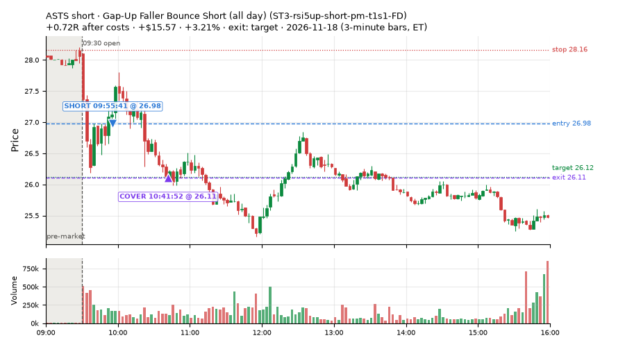
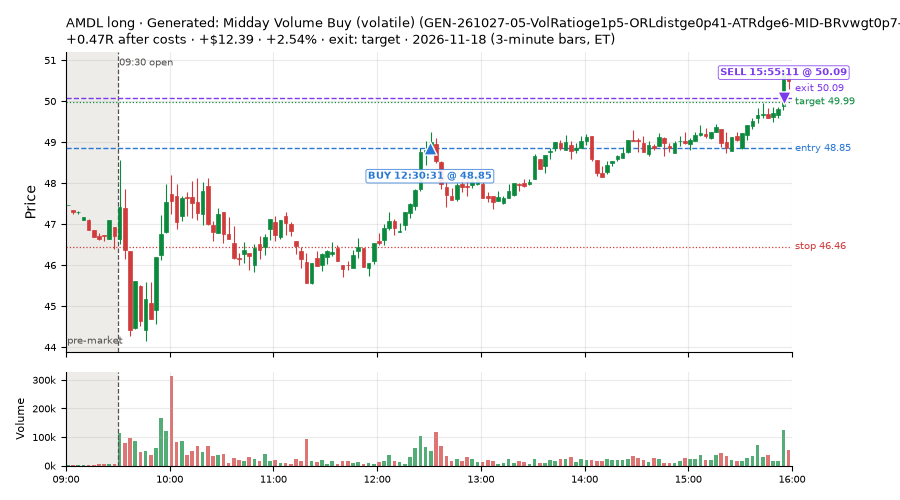
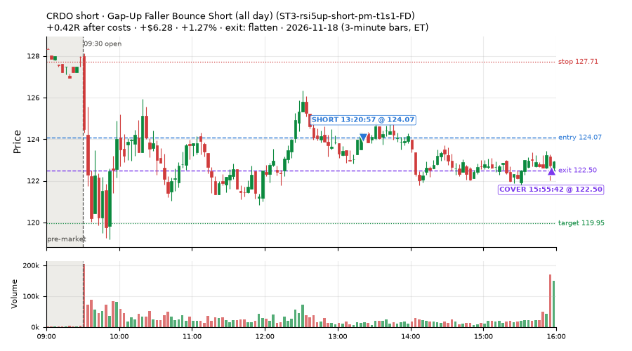
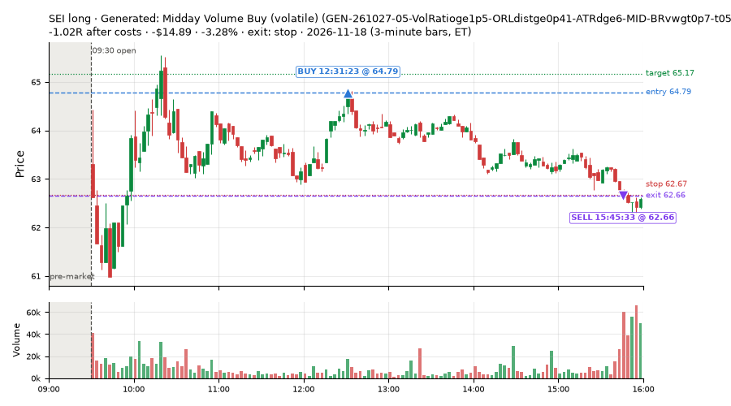
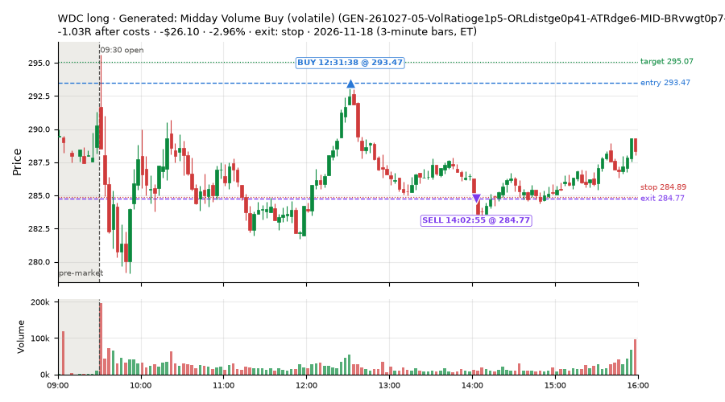
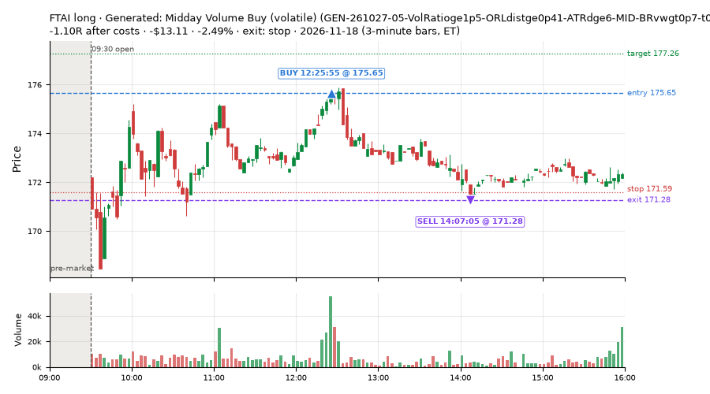
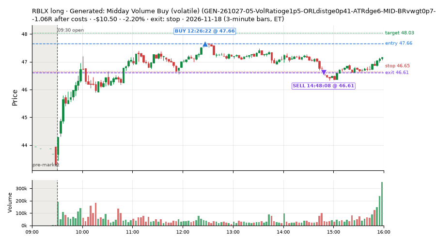
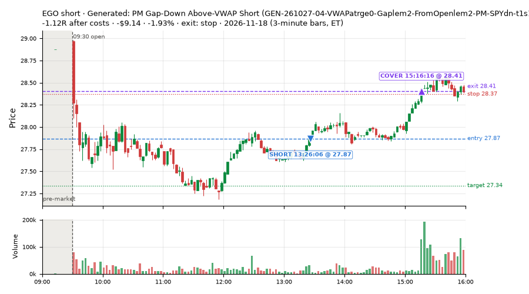

78 trades · win rate 44% · P/L $-83.28
PROBATION: no live setup has passed both locked test periods. 10 owner-directed setups added 2026-10-08 (MarcoFlow top 5 + 5 new), untested live. RW6G1 (RW6 + VWAP band guard) added 2026-10-09, probation.

| Symbol | Setup | Side | In | Out | Entry | Exit | Exit reason | % gained | P/L |
|---|---|---|---|---|---|---|---|---|---|
| ASTS | Gap-Up Faller Bounce Short (all day) (ST3-rsi5up-short-pm-t1s1-FD) | short | 09:55 | 10:41 | 26.98 | 26.11 | target | +3.21% | $15.57 |
| AMDL | Generated: Midday Volume Buy (volatile) (GEN-261027-05-VolRatioge1p5-ORLdistge0p41-ATRdge6-MID-BRvwgt0p7-t05s1-long) | long | 12:30 | 15:55 | 48.85 | 50.09 | target | +2.54% | $12.39 |
| CRDO | Gap-Up Faller Bounce Short (all day) (ST3-rsi5up-short-pm-t1s1-FD) | short | 13:20 | 15:55 | 124.07 | 122.50 | flatten | +1.27% | $6.28 |
| Symbol | Setup | Side | In | Out | Entry | Exit | Exit reason | % lost | P/L |
|---|---|---|---|---|---|---|---|---|---|
| SEI | GEN-261027-05-VolRatioge1p5-ORLdistge0p41-ATRdge6-MID-BRvwgt0p7-t05s1-long | long | 12:31 | 15:45 | 64.79 | 62.66 | stop | -3.28% | $-14.89 |
| WDC | GEN-261027-05-VolRatioge1p5-ORLdistge0p41-ATRdge6-MID-BRvwgt0p7-t05s1-long | long | 12:31 | 14:02 | 293.47 | 284.77 | stop | -2.96% | $-26.10 |
| FTAI | GEN-261027-05-VolRatioge1p5-ORLdistge0p41-ATRdge6-MID-BRvwgt0p7-t05s1-long | long | 12:25 | 14:07 | 175.65 | 171.28 | stop | -2.49% | $-13.11 |
| RBLX | GEN-261027-05-VolRatioge1p5-ORLdistge0p41-ATRdge6-MID-BRvwgt0p7-t05s1-long | long | 12:26 | 14:48 | 47.66 | 46.61 | stop | -2.20% | $-10.50 |
| EGO | GEN-261027-04-VWAPatrge0-Gaplem2-FromOpenlem2-PM-SPYdn-t1s1-short | short | 13:26 | 15:16 | 27.87 | 28.41 | stop | -1.93% | $-9.14 |








Signal to fill: median 1s, 90th percentile 2s (77 trades). Bars close each minute; the order follows the bar close.
Best excursion (MFE): median 0.34R; worst (MAE) median 0.56R. 33% of trades never got +0.25R in our favour; 0 reached +1R and still closed at or below 0.
| Symbol | Setup | Best R | Worst R | Closed R |
|---|---|---|---|---|
| KO | GEN-261023-03-RSI5le13-VWAPatrlem0p34-OPEN-BRvwgt0p6-holdtr-short | +0.67 | -1.05 | -1.15 |
| FOUR | ST7-rsi50dn-long-pm-t1s1-FD-WB1 | +0.88 | -0.75 | -0.56 |
| CLX | RW3-gapdn-rsi5pop-flowsell-short-FD-WB4 | +0.19 | -1.05 | -1.19 |
| TXT | GEN-261027-09-ORBfailDn-Gapge2-Slope6ge0p03-LAM-BRvwlt0p5-t05s05-short | +0.11 | -1.03 | -1.22 |
| CHYM | GEN-261023-03-RSI5le13-VWAPatrlem0p34-OPEN-BRvwgt0p6-holdtr-short | +2.10 | -0.29 | +0.80 |
| Entry time | Trades | Win | Avg R | P/L |
|---|---|---|---|---|
| 09:50-10:30 | 11 | 64% | +0.18 | $26.39 |
| 10:30-11:30 | 3 | 0% | -0.65 | $-8.88 |
| 11:30-13:00 | 37 | 59% | -0.15 | $-48.53 |
| 13:00-14:00 | 17 | 12% | -0.30 | $-36.94 |
| 14:00-16:00 | 10 | 30% | -0.16 | $-15.32 |
| Setup | Trades | Win | Avg R after costs | Adj R (net of SPY) | Avg R ex-market (all sessions) | P/L |
|---|---|---|---|---|---|---|
| Spike-Pullback Flag Breakout (CWT12-flag-s1-long) | 2.0 | 100% | +0.32 | +0.26 | +0.19 (beta +0.08, n 10) | $4.15 |
| Generated: Open Oversold Below-VWAP Short (GEN-261023-03-RSI5le13-VWAPatrlem0p34-OPEN-BRvwgt0p6-holdtr-short) | 5.0 | 40% | +0.10 | -0.22 | +0.59 (beta +0.73, n 7) | $0.59 |
| Generated: Late New-Low Buy (SPY down) (GEN-261026-06-NewLOD-SMA20slopelem0p28-LATE-SPYltm0p25-t1s1-long) | 5.0 | 60% | +0.27 | +0.22 | -0.19 (beta +1.34, n 24) | $4.28 |
| Generated: PM Gap-Down Above-VWAP Short (GEN-261027-04-VWAPatrge0-Gaplem2-FromOpenlem2-PM-SPYdn-t1s1-short) | 18.0 | 6% | -0.40 | -0.44 | -0.45 (beta -1.92, n 34) | $-53.83 |
| Generated: Midday Volume Buy (volatile) (GEN-261027-05-VolRatioge1p5-ORLdistge0p41-ATRdge6-MID-BRvwgt0p7-t05s1-long) | 31.0 | 65% | -0.12 | -0.08 | +0.10 (beta +1.98, n 31) | $-40.68 |
| Generated: Late-AM Gap-Up Failed-Break Short (GEN-261027-09-ORBfailDn-Gapge2-Slope6ge0p03-LAM-BRvwlt0p5-t05s05-short) | 1.0 | 0% | -1.22 | -0.83 | -0.21 (beta -2.43, n 6) | $-3.66 |
| Index Dip Bounce 1 TQQQ (IDX1-qqq100-0955-TQQQ-trail) | 1.0 | 100% | +0.26 | +0.22 | – | $2.65 |
| * Shallow Nasdaq Dip, Breadth Turn (TQQQ) (near-miss) (LD2-qqq-dip015-breadthturn-tqqq-t05s1-long) | 1.0 | 100% | +0.35 | +0.29 | – | $4.68 |
| * SPY Dip of 0.2 ATR, Breadth Turn (SPXL, trailing) (near-miss) (LD6-spy-dip020atr-breadthturn-spxl-holdtr-long) | 1.0 | 0% | -0.20 | -0.12 | – | $-2.16 |
| Gap-Down Pop Fade, Heavy Selling (all day) — WB4: up-day entry cut + SPY exit 0.30% (RW3-gapdn-rsi5pop-flowsell-short-FD-WB4) | 5.0 | 0% | -0.59 | -0.24 | +0.01 (beta -1.68, n 11) | $-11.94 |
| Big Gainer SMA50 Cross Fade (all day) (RW6-ns2-up3-short-FD) | 1.0 | 0% | -1.06 | -1.06 | -0.41 (beta -0.95, n 9) | $-4.55 |
| Gap-Up Faller Bounce Short (all day) (ST3-rsi5up-short-pm-t1s1-FD) | 4.0 | 50% | +0.20 | +0.19 | -0.04 (beta -1.53, n 18) | $17.41 |
| RSI Collapse Dip Buy (all day) — WB1: skip when SPY up > 0.10% since 09:50 (ST7-rsi50dn-long-pm-t1s1-FD-WB1) | 1.0 | 0% | -0.56 | -0.74 | – | $-5.28 |
| 20-Minute Opening Range Breakout — WB3: top 10 in play + price >= $20 (orb20_a-WB3) | 2.0 | 100% | +0.19 | +0.23 | – | $5.06 |
Market direction (SPY, beta 1) accounted for $-15.94 of today's $-83.28; the rest ($-67.34) came from the setups themselves. Avg R net of SPY: -0.15 (incl. a hedge leg's cost; report only).
25 setups live today. Today: 127 signals, 78 taken, 2 lost because another setup held the symbol (2%). Since 2026-11-05 (10 sessions): 574 signals, 272 taken, 3 lost to other setups (0%). Peak open positions today 41 of 400 slots. Earnings blackout removed 321 symbols before scanning.
Simulated playing time (not live): 301 what-if trades of signals not taken, avg -0.04R, 52% winners; of them 3 lost to another setup (avg +0.01R).
Silent: GEN-261019-06-VWAPxUp-EMAdiffge0p29-PM-SPYgt0p5-holdtr-long, GEN-261026-10-ORBfailDn-EMAdChglem0p051-PM-BRopgt0p65-t1s1-long, IDX3-spy075-0955-3x-trail, LD5-st2-breadthup-t05s1-long, NM-RWN4-ns2-spyup05-notfri-short
| Prio | Setup | Today sig / taken | Sessions | Signals / taken / trades | Taken/day | Expected/day | Lost to other setups | Lost to (setup n) | Top skip reasons | SIMULATED: not-taken n / avg R / win | Verdict |
|---|---|---|---|---|---|---|---|---|---|---|---|
| 1 | Gap-Down Pop Fade, Heavy Selling (all day) — WB4: up-day entry cut + SPY exit 0.30% RW3-gapdn-rsi5pop-flowsell-short-FD-WB4 | 9 / 5 | 2 | 20 / 11 / 11 | 5.50 | – | 0 | – | spread / quote / size 6, other 3 | 9 / -0.11R / 44% | ok 27.5 entries/week |
| 2 | RSI Collapse Dip Buy (all day) — WB1: skip when SPY up > 0.10% since 09:50 ST7-rsi50dn-long-pm-t1s1-FD-WB1 | 1 / 1 | 2 | 4 / 2 / 2 | 1.00 | – | 0 | – | spread / quote / size 1, other 1 | 2 / -0.15R / 50% | slow 5.0 entries/week; ~12 weeks to 60 trades |
| 3 | 20-Minute Opening Range Breakout — WB3: top 10 in play + price >= $20 orb20_a-WB3 | 2 / 2 | 2 | 3 / 2 / 2 | 1.00 | – | 0 | – | spread / quote / size 1 | 1 / -1.14R / 0% | slow 5.0 entries/week; ~12 weeks to 60 trades |
| 4 | Index Dip Bounce 1 TQQQ IDX1-qqq100-0955-TQQQ-trail | 1 / 1 | 10 | 1 / 1 / 1 | 0.10 | – | 0 | – | – | 0 / – | slow 0.5 entries/week; ~120 weeks to 60 trades |
| 5 | * SPY Dip of 0.2 ATR, Breadth Turn (SPXL, trailing) (near-miss) LD6-spy-dip020atr-breadthturn-spxl-holdtr-long | 1 / 1 | 10 | 1 / 1 / 1 | 0.10 | – | 0 | – | – | 0 / – | slow 0.5 entries/week; ~120 weeks to 60 trades |
| 6 | * Oversold Pop after an SPY Dip-Turn (trailing) (near-miss) LD7-ns1-idxturn-holdtr-long | 1 / 0 | 10 | 6 / 4 / 4 | 0.40 | – | 0 | – | price through stop/target 1, other 1 | 2 / +1.03R / 50% | slow 2.0 entries/week; ~30 weeks to 60 trades |
| 7 | Gap-Down Reclaim Fade, Afternoon (near-miss) NM-PM-gapdn-above-pdh-rvol-short | 0 / 0 | 10 | 1 / 0 / 0 | 0.00 | – | 0 | – | spread / quote / size 1 | 1 / +1.28R / 100% | slow no entries yet |
| 8 | Generated: Late Upper-Wick Short (SPY down) GEN-261029-07-UpWickge0p59-DayRngVsPrevle0p42-LATE-SPYltm0p5-t05s1-short | 0 / 0 | 3 | 33 / 29 / 29 | 9.67 | – | 0 | – | other 4 | 4 / +0.30R / 100% | ok 48.3 entries/week |
| 9 | Generated: Late New-Low Buy (SPY down) GEN-261026-06-NewLOD-SMA20slopelem0p28-LATE-SPYltm0p25-t1s1-long | 6 / 5 | 3 | 32 / 24 / 24 | 8.00 | – | 0 | – | other 6, spread / quote / size 2 | 8 / -0.12R / 50% | ok 40.0 entries/week |
| 10 | Generated: PM VWAP Reclaim Buy (SPY up) GEN-261019-06-VWAPxUp-EMAdiffge0p29-PM-SPYgt0p5-holdtr-long | 0 / 0 | 3 | 0 / 0 / 0 | 0.00 | – | 0 | – | – | 0 / – | silent no signals in 3 session(s); no expected rate on file |
| 11 | Generated: PM Failed-Breakdown Buy GEN-261026-10-ORBfailDn-EMAdChglem0p051-PM-BRopgt0p65-t1s1-long | 0 / 0 | 3 | 0 / 0 / 0 | 0.00 | – | 0 | – | – | 0 / – | silent no signals in 3 session(s); no expected rate on file |
| 12 | Generated: Midday Failed-Breakout Low Buy GEN-261027-06-ORBfailUp-BarsSinceLODle5-MID-BRoplt0p35-holdtr-long | 0 / 0 | 3 | 70 / 29 / 29 | 9.67 | – | 0 | – | spread / quote / size 23, other 18 | 41 / -0.37R / 34% | ok 48.3 entries/week |
| 13 | Generated: Midday Volume Buy (volatile) GEN-261027-05-VolRatioge1p5-ORLdistge0p41-ATRdge6-MID-BRvwgt0p7-t05s1-long | 44 / 31 | 3 | 44 / 31 / 31 | 10.33 | – | 0 | – | spread / quote / size 8, other 5 | 13 / -0.32R / 38% | ok 51.7 entries/week |
| 14 | Prior-Day-High Break Fade (all day) ST5-pdbrkup-short-mid-t05s1-FD | 0 / 0 | 10 | 17 / 7 / 7 | 0.70 | 0.78 | 0 | – | not shortable / shorts off 8, spread / quote / size 2 | 10 / -0.51R / 40% | slow 3.5 entries/week; ~17 weeks to 60 trades |
| 15 | Backside VWAP-Test Short CWT04-backside-vwaptest-a15-short | 0 / 0 | 10 | 7 / 0 / 0 | 0.00 | – | 0 | – | not shortable / shorts off 5, spread / quote / size 1, other 1 | 7 / -0.28R / 29% | slow no entries yet |
| 16 | Generated: PM Gap-Down Above-VWAP Short GEN-261027-04-VWAPatrge0-Gaplem2-FromOpenlem2-PM-SPYdn-t1s1-short | 32 / 18 | 3 | 60 / 34 / 34 | 11.33 | – | 0 | – | other 12, not shortable / shorts off 8, spread / quote / size 6 | 26 / +0.07R / 58% | ok 56.7 entries/week |
| 17 | * Shallow Nasdaq Dip, Breadth Turn (TQQQ) (near-miss) LD2-qqq-dip015-breadthturn-tqqq-t05s1-long | 1 / 1 | 10 | 3 / 3 / 3 | 0.30 | – | 0 | – | – | 0 / – | slow 1.5 entries/week; ~40 weeks to 60 trades |
| 18 | Early NS3 Short While QQQ Up (near-miss) NM-RWR3-ns3-qqqup-early-short | 0 / 0 | 10 | 20 / 7 / 7 | 0.70 | – | 0 | – | spread / quote / size 7, not shortable / shorts off 5, other 1 | 13 / +0.31R / 69% | slow 3.5 entries/week; ~17 weeks to 60 trades |
| 19 | Generated: Open Oversold Below-VWAP Short GEN-261023-03-RSI5le13-VWAPatrlem0p34-OPEN-BRvwgt0p6-holdtr-short | 5 / 5 | 3 | 9 / 7 / 7 | 2.33 | – | 0 | – | spread / quote / size 2 | 2 / +1.65R / 50% | slow 11.7 entries/week; ~5 weeks to 60 trades |
| 20 | Gap-Up Faller Bounce Short (all day) ST3-rsi5up-short-pm-t1s1-FD | 7 / 4 | 10 | 32 / 18 / 18 | 1.80 | 1.35 | 1 | GEN-261027-05-VolRatioge1p5-ORLdistge0p41-ATRdge6-MID-BRvwgt0p7-t05s1-long 1 | not shortable / shorts off 9, spread / quote / size 3, symbol held by another setup 1 | 14 / -0.39R / 21% | slow 9.0 entries/week; ~7 weeks to 60 trades |
| 21 | Generated: Open First-Dip Short (extended) GEN-261022-04-RSI2le0-Eff6ge0p83-SMA20dge0p59-OPEN-BRvwlt0p5-t1s1-short | 0 / 0 | 3 | 7 / 1 / 1 | 0.33 | – | 0 | – | spread / quote / size 3, not shortable / shorts off 2, other 1 | 6 / +0.18R / 67% | slow 1.7 entries/week; ~36 weeks to 60 trades |
| 22 | Generated: Late-AM Gap-Up Failed-Break Short GEN-261027-09-ORBfailDn-Gapge2-Slope6ge0p03-LAM-BRvwlt0p5-t05s05-short | 2 / 1 | 3 | 23 / 6 / 6 | 2.00 | – | 0 | – | spread / quote / size 13, not shortable / shorts off 2, other 2 | 17 / +0.59R / 88% | slow 10.0 entries/week; ~6 weeks to 60 trades |
| 23 | Panic Flush Reversal (deep, 3x volume) CWT05-flush-m075-v3-long | 0 / 0 | 10 | 23 / 12 / 12 | 1.20 | – | 0 | – | other 6, spread / quote / size 2, broker rejected 2 | 10 / -0.17R / 60% | slow 6.0 entries/week; ~10 weeks to 60 trades |
| 24 | Spike-Pullback Flag Breakout CWT12-flag-s1-long | 3 / 2 | 10 | 15 / 10 / 10 | 1.00 | – | 0 | – | other 4, broker rejected 1 | 5 / +0.10R / 60% | slow 5.0 entries/week; ~12 weeks to 60 trades |
| 25 | Big Gainer SMA50 Cross Fade (all day) RW6-ns2-up3-short-FD | 12 / 1 | 4 | 30 / 9 / 9 | 2.25 | 7.12 | 1 | orb20_a-WB3 1 | not shortable / shorts off 16, spread / quote / size 3, symbol held by another setup 1 | 21 / +0.28R / 71% | slow 11.2 entries/week; ~5 weeks to 60 trades |
Every trade is attached as a CSV you can open and edit in Excel or Google Sheets. Live page: https://misiti15.github.io/MCF/live/